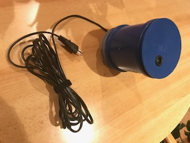
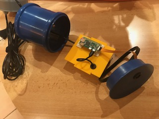
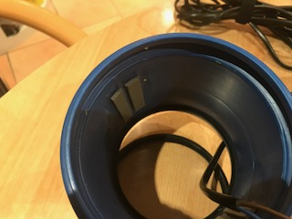
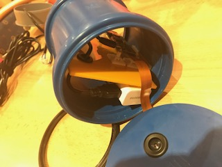
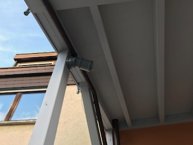
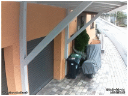

Surveillance Project with MotioneyeOS
Why I have started this
project?
In December 2018, at the first advent, I placed
my Christmas lights, shaped of a reindeer with trailer in my
garden, located behind my house, in front of the back door of my
house. This is the procedure I do every year. But at this day it
was different: Typically I connect it over a programmable timer
power connector switch to a power connector port, located at the
outside wall near the back door. Near this door my kitchen window
is located, where I can see the lights when it turns on at 5 pm.
It is programmed to turn off at midnight. But at half past 10 pm.,
I can‘t see the light from the window. I opened the door and
checked the programmable switch. All was ok – possibly a cable
defect of the cable extension to the Christmas lights or the fuse
is burned???... - Damn! The complete reindeer with its trailer is
not there...It was stolen!!! The thieves should burn in hell
forever!!!! I do not know why anybody steals a used Christmas
light with costs of less than 30 € for a new one…..
However, I swear for myself – this should never happen again without notice or without recorded pictures of the thief. I‘ve searched for surveillance cameras but seen very fast: Good ones are very expensive(>250€) and cheap ones will not fulfill my requirements.
But I‘m playing since a long time with RaspberryPi projects with camera...Why not DIY? (Do It Yourself)
I‘ve searched for existing projects and found „Motion“. This sounds very interesting – Installed ... and I was surprised and impressed about the possibilities and quality. But I missed a good and easy to use frontend. Doing on my own would be possible but then I found „Motioneyeos“. This was really great and all what I want/need. For watch and configure, a simple browser with network/internet access is needed and additionally a App for android is available – really great!!! All possibilities for notification are available, masking of non control areas and possibilities for controlling of GPIO-pins….WOW!!!
The only thing that I miss, now, is a good housing for the camera an the RaspberryPi. I do own a 3D printer but I know, the material that I print is not weather(sun, rain, heat, cold…) resistant and also not aging resistant. But then I had the idea about using sewage pipes. These are aging resistant , weather resistant, absolutely water proven and very cheap. Handling with tools like drills, saw and glue are possible and easy, because it‘s PVC or similar plastic.
So, I bought some tubes and tube end covers, an acryllic glass plate(base plate for mounting RaspberryPi), some PVC-glue(glue a guiding rail inside the tube), a PG-screw(for water resistant cable input) and a spout for mounting the camera lens. Let see the pictures below to see what the working steps are.
These tools I‘d recommend:
- circular
saw (I own a small one from Proxxon)
-
a drilling machine (I‘m using a Bosch
IXO)
- some drilling tools like drills
in different sizes, cone
drill, Forstner
drills (all with hexagonal shank for IXO)
- permanent
felt tip
 This is the finished sewage pipe camera, complete with internal power supply and RaspberryPi +Raspi CSI-camera
 This is the opened sewage pipe. Currently I‘m using a RaspberryPi ZERO W because all my other Raspberrys are used in other projects. Its OK for now but I‘ll replace with an RaspberryPi 3A+. Its ordered but not delivered.
The small black USB cable goes thru the yellow acrylic base plate with a spout, because of the sharp edge of the drilled hole.
 Here two glued guiding rails are shown. At the other side of the inner wall, two other ones are glued. They will place the base plate in the middle of the tube.
 Tube with inside moved acrylic base plate. In front of the end cover, the spout with inserted camera lens is shown.
 This shows the camera mounted at my car-port.
 This is a VIDEO, made by this camera, mounted at my car-port with view to the front door. (...click @pic to view…)

The postman has brought my infrared
spotlight.
I‘ll comment further…
 This
Video shows the remote control of my garage door over the
motioneyeos configuration frontend.
This
Video shows the remote control of my garage door over the
motioneyeos configuration frontend.